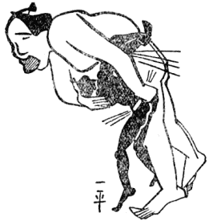
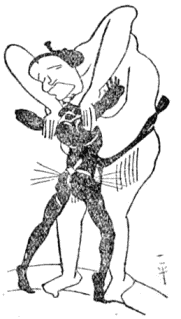
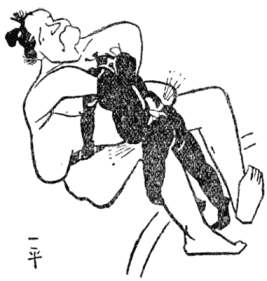
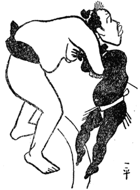
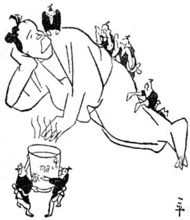
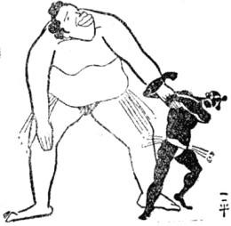

第一図
つまらなくて、だれた国技館の中にたゞ一つ、つまつて
吃驚するものがある。それは幕下二枚目、出羽ヶ嶽君の巨躯だ。彼は身長六尺五寸、体量四十二貫あるそうな。象のやうな身体を猫背にして勝つても負けても
海豚のような細い眼は柔かく眠つてる。四十八手の裏表も彼に対しては桁が外れる。世の中で呆れる事が好きな人の為めにこの怪物の毎日の取組振りを紹介しよう。昨日は楢綿にこんな風に負けた。
出羽ヶ嶽星取表――●○

第二図
この日の相手、雷ヶ梅も六尺豊かな長身、但しその太さに於て出羽君とは西洋のマカロニと
そうめん程の相違がある。わがマカロニ関はそうめん関に右筈で押し行かれ土俵の剣ヶ峰で危険迫ると悟つても相手を突き離さうとする
状、
恰も『オイ、君、離して呉れてはどうだね。さう押すと
おれは
ひよつとすると土俵の外へ出て仕舞ふかも知れないよ』といふ如し、悠揚として居る。そのうち彼の両足は持主の身の安泰を図り土俵の外へバランスを取りに出る。
出羽ヶ嶽星取表――●●○

第三図
相手の朝ノ森は
まつたの多い力士。出羽君もあまり立ちの早い方では無い。そこで何遍か仕切り直す。その度に、大きな袋のやうな身体をぐだらぐだら揺つて恰度子供が嫌ひなお湯に入れられる時のやうな渋つた態度で土俵を上下する。取組は二本差しの朝の森を
貫で
撓めてるうち左外がけで押し倒される。
出羽ヶ嶽星取表――●●●○

第四図
この日は出羽君大出来である。江戸崎がかゝつて来るを閂で締めつけ、どうやらきめ出して仕舞つた。戦ふのにいつも相手の背に釣り合ふやう身体を
くの字に曲げて
相撲はねばならぬから
彼怪物はいつも、身体の半分の力しか使へぬやうに見える。
出羽ヶ嶽星取表――○●●●○

第五図
今日は出羽君の取組は休みだ。梅雨を催す小雨の日。恐らく怪物は部屋に居て弟子達に身体を揉ましてるに違ひない。十両の事ゆゑ、こんなに多勢弟子は居ないかも知れない。又湯呑みを担いで運ぶ図柄もあまり馬鹿馬鹿しいやうだが、彼怪物の休息図を想像するとどうしてもこの
冗談をつけたくなるこの意味に於て冗談は真実になる。
出羽ヶ嶽星取表――○●●●○
出羽ヶ嶽星取表――●や○●●●○

第六図
相手の
陸奥ノ
花もそんなに細かい力士ではないが出羽に向つて仕切ると四階見物より『小さいのーイ、
確かりしろ』と怒鳴られる。怪物の前に出るとどの力士も固有名詞を失ひ一般に小さい力士として概念化されて仕舞ふらしい。
仕遍り中陸奥に註文あり二度怪物の左手に取り付き
とつたりの気を見せる。渾身の力にても、引つ張られても貧乏
揺りもせず微笑する処は大と小の価値を十分現してるが
扨勝負となると物理学上の定理は応用されぬ。乞ふ星取表を見よ。